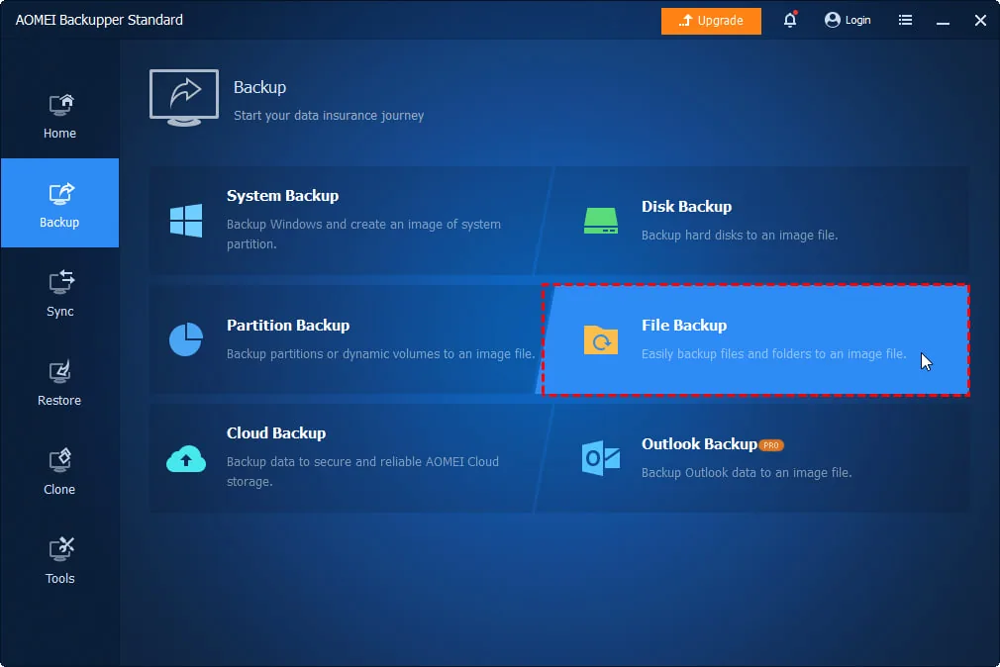
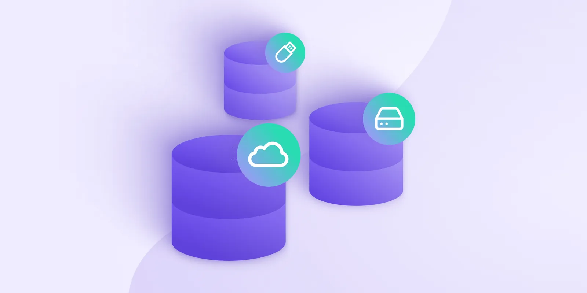
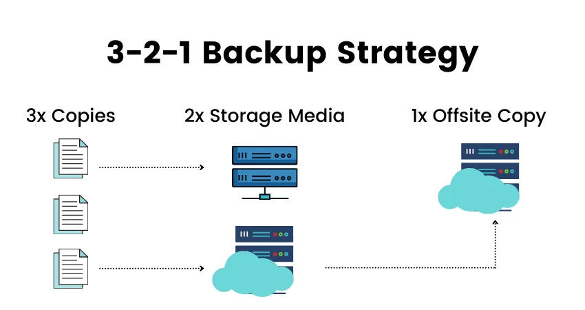
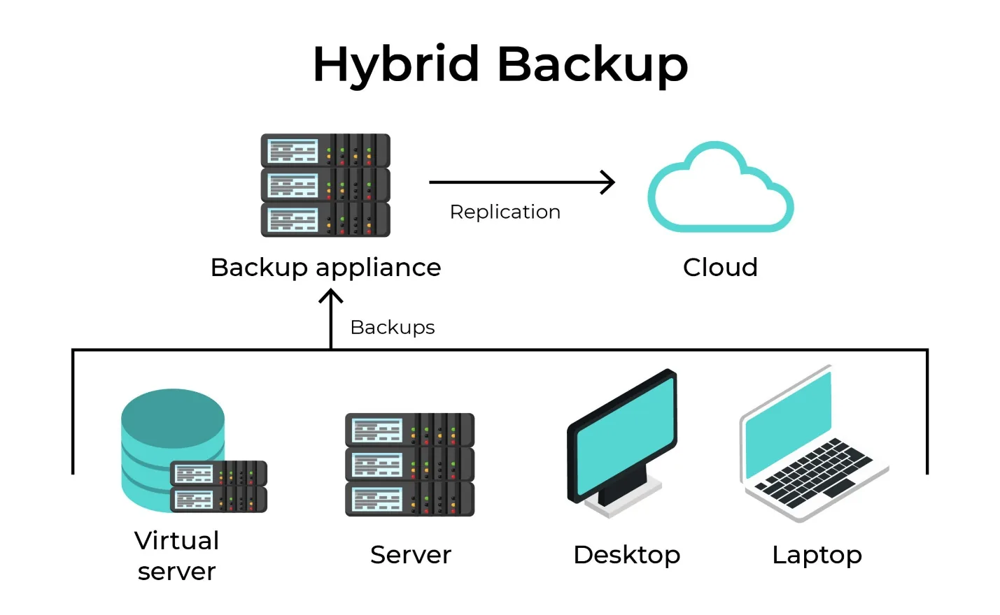
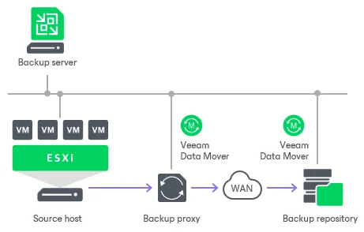

Backup Alınması (Ehtiyat Nüsxə)
Təsəvvür edin, həftələrlə üzərində işlədiyiniz, gecələr yatmayıb yazdığınız bir kurs işiniz var. Və ya illərlə çəkdirdiyiniz, sizin üçün çox dəyərli olan bütün şəkillər telefonunuzda, kompüterinizdədir. Bir gün birdən kompüteriniz açılmır, telefonunuz suya düşür və ya kiminsə yaddaşı pozulmuş fləşkasından virus keçir. Bütün bu qiymətli məlumatlar bir anda yox olur. Nə qədər dəhşətli səslənir, deyilmi?
Məhz belə faciələrin qarşısını almaq üçün Backup (Ehtiyat Nüsxə) adlanan "xilasedici" dostumuz köməyə gəlir.
Backup sadəcə məlumatlarınızın kopyasını çıxarıb başqa bir yerdə saxlamaqdır. Məsələn, vacib fayllarınızı bir yerdən başqa bir yerə köçürürsünüz. Orijinal fayllarınıza nəsə olsa, ehtiyat nüsxəsindən onları geri qaytara bilirsiniz. Bu, məlumatlarınız üçün sığorta almaq kimidir.
Bəs Niyə Backup Çox Önəmlidir?
Niyə hər bir tələbə və ya hər hansı bir kompüter istifadəçisi bunu etməlidir? Çünki:
- Gözlənilməz Hallar: Heç kimə sirr deyil ki, texnika bəzən bizi yarı yolda qoya bilir. Kompüterin sərt diski sıradan çıxa, telefonunuz sınıb işləməyə bilər. Hətta elektrik kəsiləndə belə, bəzi problemlər yarana bilir. Backup sizi bu hallardan qoruyur.
- Viruslar və Ransomware: Bu günlərdə ən böyük təhlükələrdən biri, kompüterə girən və bütün fayllarınızı şifrələyən viruslardır. Bu viruslar adətən fayllarınızı geri qaytarmaq üçün pul tələb edirlər. Əgər sizin backup-ınız varsa, pul ödəməyə ehtiyac qalmır, sadəcə backup-ı bərpa edirsiniz.
- Təsadüfi Səhvlər: Bəzən bir faylı səhvən silirik və ya dəyişdiririk. Backup sayəsində bu səhvi asanlıqla düzəldə bilərsiniz.
Kompüterin formatlanmasından əvvəl mütləq şəkildə backup alınmalıdır. Bu, həm məlumatların qorunmasını təmin edir, həm də hər hansı bir qəza halında məlumatların bərpasını asanlaşdırır.
Backup Növləri: File, Full Image və Clone
Ümumiyyətlə, bu tip ssenarilər üçün 3 növ backup mövcuddur:
- File (Fayl) Backup
- Full Image Backup
- Clone Backup
1 File (Fayl) Backup
Bu, ən sadə və ən çox istifadə olunan backup növüdür.
Sadəcə olaraq, sizin üçün dəyərli olan ayrı-ayrı faylların və qovluqların kopyasını çıxarmaqdır. Məsələn, "Sənədlərim" qovluğundakı bütün kurs işləri, "Şəkillərim" qovluğundakı fotolar və ya bəzi proqramların xüsusi faylları. Siz bu faylları USB-yə, xarici diskinizə və ya bulud yaddaşına kopyalayırsınız.
Evdəki vacib sənədlərin (diplom, doğum haqqında şəhadətnamə) surətini çıxarıb ayrıca bir qovluqda saxlamağa bənzəyir. Əsas sənəd itəndə və ya zədələnəndə, surətindən istifadə edə bilirsiniz.
Fayl səviyyəsində backup almaq üçün, kompüterin Desktop, Downloads, Documents və D diskindəki faylları backup diskinə köçürürük. Bu fayllar arasında Word, Excel, PDF və digər vacib sənədlər olur.
Backup diskində:
- Həmin şəxsin adı, soyadı, şirkət və departament məlumatları qeyd edilir.
- Tarix də əlavə edilir (məsələn, ad soyad, ayın tarixi).
Fayl Backup həm manual — əl ilə, həm də Acronis və AOMEI kimi proqramlar ilə alınır.

2 Full Image Backup
Bu, fayl backup-dan daha geniş və "dərin" bir backup növüdür.
Nədir? İmaj backup, kompüterinizin (və ya sərt diskinizin) bütün məzmununun, o cümlədən əməliyyat sisteminin (məsələn, Windows), proqramların, sürücülərin və bütün parametrlərin tamamilə eyni kopyasını çıxarmaqdır. Nəticədə siz bir image faylı (şəkil deyil, texniki termindir) əldə edirsiniz.
Nəyə bənzəyir? Təsəvvür edin ki, siz evinizin bütün əşyalarının, divarlarının, mebellərinin və hər cür detalının dəqiq bir fotoşəkilini çəkirsiniz. Evinizə nəsə olsa, o fotoşəkilə baxaraq hər şeyi dəqiq şəkildə əvvəlki yerinə qoya bilirsiniz. İmaj backup da kompüterin "şəklini" çəkir.
Nə zaman lazımdır? Əgər kompüterinizdə ciddi bir problem (əməliyyat sisteminin sıradan çıxması, virus hücumu) yaranarsa və hər şeyi yenidən qurmaq (format etmək) məcburiyyətində qalsanız, imaj backup sayəsində bütün proqramları və parametrləri yenidən qurmadan kompüterinizi əvvəlki vəziyyətinə qaytara bilərsiniz.
Full Image Backup zamanı kompüterin tam ehtiyat nüsxəsi çıxarılır. Buraya:
- Əməliyyat sistemi,
- Fayllar,
- Proqramlar,
- Sistem settinglər və digər məlumatlar daxildir.
Full Image Backup ümumiyyətlə aşağıdakı hallarda alınır:
- Yeni kompüterə keçərkən – köhnə kompüterin tam nüsxəsi yeni kompüterə ötürülür.
- Kompüteri format edərkən – əməliyyat sistemi və digər vacib məlumatların bərpası üçün.
- Kritik infrastruktur olan avadanlıqların qorunması üçün – xüsusi avadanlıqların qoşulduğu risk qrupunda olan kompüterlər üçün bu tip backup vacibdir.
Full Image Backup alındıqdan sonra hər hansı bir bədbəxt hadisə zamanı, Acronis proqramında Restore bölməsinə daxil olaraq, aldığımız backupdan məlumatları geri qaytara bilərik.
Qeyd: Acronis və AOMEI proqramlarından istifadə edərkən iki üsul mövcuddur:
- Hiren's BootCD (Live CD) ilə açmaq.
- Acronis proqramını Google-dan tapıb Windows sisteminə yükləmək.

3 Clone Backup
Klon backup, image backup-a çox oxşasa da, əsas bir fərqi var.
Klonlama, bir sərt diskin bütün məzmununu olduğu kimi başqa bir sərt diskə köçürməkdir. Nəticədə siz eyniləşmiş, birəbir eyni iki sərt disk əldə edirsiniz. Klonlama üçün xüsusi proqramlar istifadə olunur.
Ehtiyat üçün eyni maşından bir dənə də almağa bənzəyir. Əsas maşın qəzaya uğrayanda, sadəcə ikinci maşını işə salıb davam edirsiniz.
Ən çox istifadə olunduğu hallar:
- Köhnə sərt diskinizi daha sürətli bir SSD ilə əvəz etmək istəyəndə.
- Kompüterinizin diski sıradan çıxdıqda, klonlanmış diskdən istifadə edərək dərhal işə davam edə bilərsiniz.
Clone Backup — bir kompüterin tam nüsxəsini digər kompüterə köçürmək kimidir. Bu, iki şəkildə həyata keçirilir:
- Offline: Backup aparatından (docking station) istifadə olunur.
- Online: Acronis və AOMEI proqramlarından istifadə olunur.
Clone Backup-un şərtləri:
- Klon alınacaq kompüterin HDD-sinin ölçüsü 1TB-dırsa, klonun atılacağı hədəf diskin həcmi ən azından 1TB olmalıdır, ya da daha böyük olmalıdır.
- Backup alınarkən:
- Source (mənbə) bölməsində backup alacağımız kompüterin diski seçilir.
- Target (hədəf) bölməsində isə backup diski yerləşdirilir.
Diqqət edilməli məqam: Disklərin (Source və Target) yerləri qarışarsa, məlumatlar səhvən silinə bilər.
Backup alınması kompüterin təhlükəsizliyi və məlumatların qorunması üçün əhəmiyyətli bir addımdır. Hər zaman müvafiq backup növü seçilməli və məlumatların təhlükəsiz saxlanması təmin edilməlidir. Full Image Backup və Clone Backup kimi üsullar, xüsusilə kritik sistemlər üçün daha uyğun ola bilər.
Yedəkləmə Strategiyaları: 3-2-1, Hybrid və Veeam
3-2-1 Backup
3-2-1 Backup prinsipinin əsas məqsədi məlumatların təhlükəsizliyini təmin etmək üçün üç nüsxə yaratmaqdır:
- 3 nüsxə: Əsas məlumatlar və iki əlavə nüsxə.
- 2 müxtəlif media növü: Məlumatların fərqli media üzərində saxlanması (məsələn, lokal disk və bulud yaddaşı).
- 1 off-site nüsxə: Bir backup nüsxəsi fiziki olaraq kompüterdən uzaq bir yerdə saxlanmalıdır (məsələn, bulud yaddaşı və ya xarici harddisk).
Bu prinsip, məlumat itkisi və ya fiziki fəlakətlər halında məlumatların bərpasını asanlaşdırır.

Hybrid Backup
Hybrid Backup lokal və bulud yedəkləmə üsullarını birləşdirir. Bu yanaşma, məlumatların həm yerli cihazlarda, həm də buludda saxlanmasını təmin edir.
- Lokal Backup: Yüksək sürətlə bərpa edilə bilən məlumatları yerli şəbəkə və cihazlarda saxlayır.
- Bulud Backup: Məlumatların fiziki fəlakətlərdən qorunması üçün internet üzərindən uzaq serverlərdə saxlanılır.
Hybrid Backup, həm məlumatların tez bərpasını, həm də uzunmüddətli təhlükəsizliyi təmin etmək üçün effektivdir.

Veeam Backup
Veeam Backup, fiziki və virtual mühitlərdə məlumatların yüksək etibarlı və sürətli yedəklənməsi üçün geniş istifadə olunan bir proqram təminatıdır. Veeam:
- Məlumatların tam və fərdi backup-ını almağı təmin edir.
- Virtual maşınlar (VM) və fiziki serverlər üçün avtomatlaşdırılmış backup prosesləri təklif edir.
- Ən yaxşı bərpa zamanını təmin etmək üçün yüksək performanslı yedəkləmə və bərpa alətləri təqdim edir.
- Bulud və hibrid yedəkləmə dəstəyi ilə istifadəçilərə məlumatların təhlükəsiz saxlanmasını təmin edir.
Veeam Backup, xüsusilə iş davamlılığı və şəbəkə təhlükəsizliyi üçün idealdır.
Bu backup növləri, məlumatların qorunmasını təmin etmək üçün müxtəlif yanaşmalar təqdim edir. 3-2-1 Backup sadə və effektiv bir prinsipdir, Hybrid Backup məlumatların həm sürətli, həm də təhlükəsiz saxlanmasını təmin edir, Veeam Backup isə yüksək etibarlı məlumat yedəkləmə və bərpa alətləri ilə qabaqcıl həllər təklif edir.

Backup Yanaşmaları: Full, Incremental və Differential
Backup-ın bir neçə sadə üsulu var:
- Tam Backup (Full Backup): Bütün fayllarınızın tam kopyasını çıxarmaq. Məsələn, bütün "Sənədlərim" qovluğunu başqa bir yerə kopyalamaq. Bu bir az çox vaxt aparır, amma ən etibarlısıdır.
- İnkremental Backup (Incremental Backup): İlk dəfə tam backup etdikdən sonra yalnız yeni əlavə olunan və ya dəyişdirilən faylları kopyalamaq. Bu, həm vaxtınıza, həm də yaddaş yerinizə qənaət edir.
Daha dərindən: Incremental Backup
İnkremental Backup yalnız son backupdan sonra dəyişən və ya əlavə olunan məlumatları saxlayır. Bu yanaşma ən çox yaddaş və vaxt qənaəti təmin edir, çünki yalnız yeni məlumatlar saxlanılır.
- Əvvəlki nüsxə ilə müqayisədə yalnız dəyişikliklər backup edilir.
- Bərpa prosesi: Ən son tam backup və sonra hər bir inkremental backup bərpa edilməlidir.
- Üstünlükləri: Az yaddaş istifadə edir və sürətli backup almağa imkan verir.
- Əksiklikləri: Bərpa zamanı daha çox vaxt tələb olunur, çünki bütün dəyişikliklər tək-tək bərpa edilir.
Differential Backup
Differensial Backup son tam backupdan sonra edilən bütün dəyişiklikləri saxlayır. Bu yanaşmada hər dəfə tam backupdan sonrakı bütün məlumat dəyişiklikləri toplanır.
- Tam backupdan sonra dəyişən bütün məlumatlar backup edilir.
- Bərpa prosesi: Yalnız son tam backup və son differential backup bərpa edilməlidir.
- Üstünlükləri: Bərpa prosesi daha sürətlidir, çünki yalnız iki nüsxə lazımdır.
- Əksiklikləri: Daha çox yaddaş və vaxt tələb edir, çünki əvvəlki versiyaların dəyişikliklərini də saxlayır.
Full Backup (Tam Backup)
Full Backup bütün məlumatları tam olaraq ehtiyat nüsxəsinə alır. Bu yanaşma bütün faylların, proqramların və sistemin tam nüsxəsini çıxarır.
- Bütün məlumatlar bərpa edilə bilən şəkildə saxlanılır.
- Bərpa prosesi: Ən sürətli və asan bərpadır, çünki yalnız bir tam backup faylından istifadə edilir.
- Üstünlükləri: Bərpa sürətlidir və sadədir, çünki bütün məlumatlar bir yerdə saxlanılır.
- Əksiklikləri: Yaddaş və vaxt baxımından ən çox resurs istifadə edir, çünki hər dəfə bütün məlumatlar yenidən saxlanılır.
| Növ | Nəyi saxlayır | Bərpa | Resurs |
|---|---|---|---|
| Incremental | Yalnız dəyişən məlumatlar | Uzun ola bilər | Qənaətli |
| Differential | Son tam backupdan sonra dəyişənlər | Daha sürətli | Yaddaş istifadə edir |
| Full | Bütün məlumatların tam nüsxəsi | Ən sürətli | Çox resurs tələb edir |
Bu backup növləri müxtəlif ehtiyaclara uyğun olaraq istifadə edilir. Məlumatların təhlükəsizliyini təmin edərkən, hər birinin üstünlükləri və çatışmazlıqları nəzərə alınmalıdır.
Bəs Backup-ı Harada Saxlayaq?
- Xarici Yaddaş: Ən sadə və populyar üsullardan biridir. USB fləşkart, xarici sərt disk və ya SD kart kimi qurğulara fayllarınızı köçürə bilərsiniz.
- Bulud Yaddaşı (Cloud Storage): Bu, fayllarınızı internet üzərindən uzaq serverlərdə saxlamaq deməkdir. Google Drive, Dropbox və ya Yandex Disk kimi xidmətlər buna misal ola bilər. Ən böyük üstünlüyü, fayllarınıza istənilən yerdən və istənilən qurğudan daxil ola bilmənizdir. Həmçinin kompüterinizə nəsə olsa, buludda saxladığınız fayllara heç nə olmur.
- İkiqat Təhlükəsizlik: Ən yaxşı variant hibrid yanaşmadır. Fayllarınızı həm xarici yaddaşda, həm də buludda saxlamaq ən etibarlısıdır. Bu yolla bir variantda problem yaranarsa, digəri sizin xilasınız olur.
Unutmayın ki, backup etmək bir dəfəlik iş deyil. Məlumatlarınızın təhlükəsizliyini təmin etmək üçün bunu mütəmadi olaraq, məsələn, hər həftə və ya ayda bir dəfə etmək lazımdır. Yoxsa birdən vacib bir fayl itirə bilərsiniz. Beləliklə, backup etməyi bir vərdişə çevirin və məlumatlarınızın təhlükəsizliyindən əmin olun!